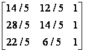

Виконання різноманітних дій з геометричними об’єктами є центральною задачею в комп’ютерній графіці. Тому вибір математичних методів і алгоритмів для її реалізації суттєво впливає на ефективність цілої графічної системи. У сучасній комп’ютерній графіці досить широко використовується метод координат, оскільки графічне зображення складається з пікселів, які задаються координатами. Крім цього, координати використовуються для опису розміщення об’єктів та для створення зображень шляхом перетворень з однієї системи координат в іншу.
Афінним називається перетворення, що має такі властивостями:
● будь-яке афінне перетворення може бути представлене як послідовність операцій з числа найпростіших: зсув, розтягнення/стиснення, поворот;
● зберігаються прямі лінії, паралельність прямих, відношення довжин відрізків, що лежать на одній прямій, і відношення площ фігур.
Афінні перетворення координат на площині:
(X, Y) – двовимірна система координат,
(x, y) – координати старої системи в новій системі координат.
 .
.
Загальний вигляд афінного перетворення:
 ,
,
де A, B, C, D, E, F – константи.
Обернене перетворення теж є афінним:
Найпростіші афінні перетворення об’єкта на площині.
1. Здвиг об’єкта:

або матрицею: .
Рис. 1 Зсув об’єкта
Обернене перетворення задається формулами :
або відповідною матрицею:
.
Примітка! У літературі часто використовують іншу матрицю зсуву координат об’єкта:
.
З використанням даної матриці, нові координати об’єкту утворюються внаслідок множення старих координат на дану матрицю [X,Y,1]=[x,y,1] M.
2. Масштабування об’єкту:
,
а в матричній формі:
.
Рис. 2 Масштабування об’єкта
Обернене перетворення задане:
,
та відповідно матрицею
.
Коефіцієнти можуть бути від’ємними. Наприклад, при kx = -1 отримуємо дзеркальне відображення відносно осі Y.
Також варто зауважити, що у вище згаданих формулах йдеться про пропорційне зміщення всіх сторін об’єкту.
Якщо взяти загальну матричну перетворення , то при =, а ==0 виконується пропорційне масштабування, при , а ==0 – непропорційне.
Примітка! У даних формулах йде мова про масштабування об’єкту та його переміщення. Якщо потрібно зробити чисте масштабування без ефекту переміщення, тоді варто об’єкт помістити в центр координат.
3. Поворот об’єкта відносно центру координат на кут α відповідає системі рівнянь:

або задається матрицею
 .
.

Рис. 3 Поворот об’єкта
Обернене перетворення – поворот на кут (-α) задане системою рівнянь:
та відповідною матрицею
.
Увага! У всіх афінних перетвореннях, описаних вище, використовуються однорідні координати – це координати неоднорідного вектора [x,y], що є трійкою , де деяке дійсне число. Зазвичай використовують вектор . При бажанні можна користуватись звичайними координатами, але формули матимуть наступний матричний вигляд:
зсув - ,
масштаб: ,
поворот: ,
де K – матриця координат об’єкту до перетворення, – після перетворення.
Подібно до двовимірних афінних перетворень, під час роботи з якими з використанням однорідних координат, здійснюють дії над матрицями 3х3, тривимірні перетворення можуть бути представлені матрицею 4х4.
Отже, аналогічно двовимірному випадку матриця зсуву матиме вигляд:
M=,
а нові координати обчислюватимуться за формулою[X,Y,Z,1]= [x,y,z,1]M.
Матриця масштабування –
S=
тоді нові координати обчислюватимуться за формулою[X,Y,Z,1]=[x,y,z,1] S.
Стосовно матриці повороту, то в залежності від вибраної осі матимемо такі матриці:
- поворот відносно осі OZ:
,
- поворот відносно осі OX:
,
- поворот відносно осі OZ:
.
Для обчислення нових координат застосовується формула [X,Y,Z,1]=[x,y,z,1] P.
Складним (комбінованим) називається перетворення, яке містить ланцюжок базових перетворень (не менше двох). Зауважимо, що майже всі афінні перетворення залежать від порядку їх виконання. Наприклад, перетворення повороту не комутативні ().
Найчастіше на практиці для визначення матриці перетворень використовують рівняння:
 ,
,
що випливає із рівняння афінних перетворень , де K – матриця координат об’єкту до перетворення, – після перетворення, М – матриця перетворення.
Приклад 1. Знайти матрицю перетворення трикутника Р1Р2Р3 у трикутник P1′P2′P3′ (рис. 4)
Рис. 4 Перетворення трикутників
Однорідні координати вершин трикутника Р1Р2Р3 складають матрицю
, а трикутника P1′P2′P3′ – .
Зі співвідношення  отримаємо: .
отримаємо: .
Для представлення даних та виконання різноманітних перетворень використовуються певні узгодження. Найбільшу увагу потрібно приділяти формулюванню завдання та інтерпретації результатів. Наприклад, перед виконанням повороту необхідно отримати відповіді на наступні питання:
Ø У правосторонній чи лівосторонній системі координат ( у залежності від взаємного розміщення напрямків координатних осей, розрізняють правосторонню та лівосторонню координатні системи, рис. 4) визначаються координатні вектори?
Ø Обертається об'єкт або система координат?
Ø Поворот здійснюється за чи проти годинникової стрілки?
Ø Координати записуються у вигляді рядка або стовпця матриці?
Ø Навколо якої лінії або осі здійснюється поворот?
а) б)
Рис.5. Типи систем координат а) правостороння; б) лівостороння.
Нехай маємо правосторонню систему координат, об'єкт обертається в нерухомій координатної системі, поворот визначається правилом правої руки (тобто поворот за годинниковою стрілкою) і координатні вектори представляються у вигляді рядка матриці.
Так як вектор задається рядком матриці, то матрицю перетворення слід розмістити після даних (матриці координатних векторів). Це перетворення задається шляхом множення справа. У разі однорідних координат для повороту об'єкта за годинникової стрілкою на кут навколо початку координат (осі OZ) використання множення праворуч приводить до наступного результату:
.
Якщо ми виразимо координатні вектори, задані в однорідних координатах у вигляді стовпця матриці, то поворот можна виконати наступним чином:
.
Для того, щоб повернути систему координат і залишити незмінними координатні вектори, необхідно кут замінити на .
Рис. 6. Перетворення координатних векторів та системи координат
Приклад 1. Повернути трикутник АВС з координатами (3;-1), (4;1), (2;1) на 90о проти часової стрілки відносно початку координат.
Використовуючи матрицю координат 3х2 та формули повороту отримаємо:
.
Рис. 7. Поворот трикутника АВС в
Приклад 2. Відобразити трикутник DEF з координатами (8;1), (7;3), (6;2) спочатку відносно осі Y=0 у трикутник , а потім відносно прямої x=y у трикутник .
Відображення відносно осі Y=0:
.
Відображення відносно прямої x=y:
.
Рис. 8. Відображення трикутника DEF
Приклад 3.
Нехай задано трикутник ABC з координатами (2;2), (4;2), (4;4). Знайти координати нового трикутника, повернутого на 90о відносно початку координат та відображеного відносно прямої y=-x.
Перша матриця повороту має вигляд:
Матриця відображення відносно y=-x відповідно рівна:
Результатом повороту та відображення координат K трикутника ABC будуть координати K*:
,
.
Якщо провести перетворення в оберненому порядку (спочатку відображення, а потім поворот), то отримаємо трикутник :
.
Рис. 9. Комбінований поворот та відображення трикутника ABC (– проміжний трикутник прямої задачі, – проміжний трикутник оберненої задачі)
Приклад 4. Побудувати матрицю повороту точки M(x, y) відносно довільної точки N(m, n) на кут ϕ у додатному напрямку.
Однорідні координати дають можливість знайти матрицю повороту відносно довільної точки. У загальному випадку поворот відносно довільної точки може бути реалізований шляхом таких перетворень:
1) переміщення точки N(m, n) на вектор (–m, –n) так, щоб центр повороту сумістився з початком координат. Матриця цього перетворення має вигляд:
2) поворот точки на кут ϕ у додатному напрямку відносно початку координат. Матриця цього перетворення визначається формулою:
Отже, для знаходження результуючого повороту точки M(x, y) відносно точки N(m, n) потрібно перемножити задані матриці за вказаним порядком:
[X,Y,1] =[x,y,1] .
Приклад 5. Нехай задано рівняння прямої L та трикутник ABC з координатами вершин (2,4,1), (4,6,1), (2,6,1). Дзеркально відобразити трикутник відносно даної прямої.
Пряма L пройде через початок координат під час зсуву її на 2 одиниці по осі ОY (матриця зсуву матиме вигляд – ). В результаті повороту навколо початку координат на пряма співпаде з віссю ОХ (матриця повороту матиме вигляд – ). Далі необхідно дзеркально відобразити об’єкт за допомогою матриці дзеркального відображення і повернутись в початкову орієнтацію. Комбінація перетворень матиме вигляд:
=.
Отже, координати нового трикутника матимуть будуть такими:
=.
а) б)
в) г)
д)
Рис 10. Відображення відносно будь-якої кривої
а)початкове та кінцеве положення трикутника;
б)зсув прямої в початок координат;
в)поворот прямої та її спів падіння з віссю ОХ;